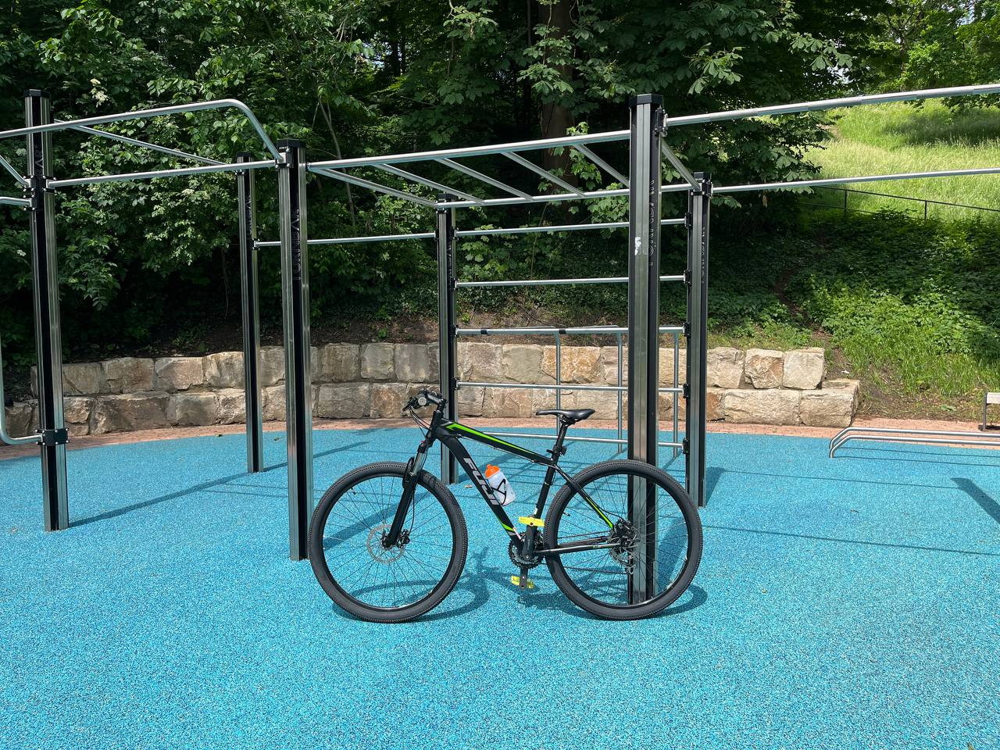
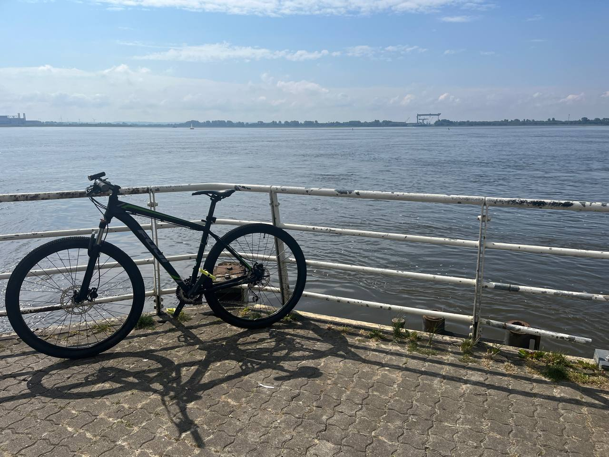
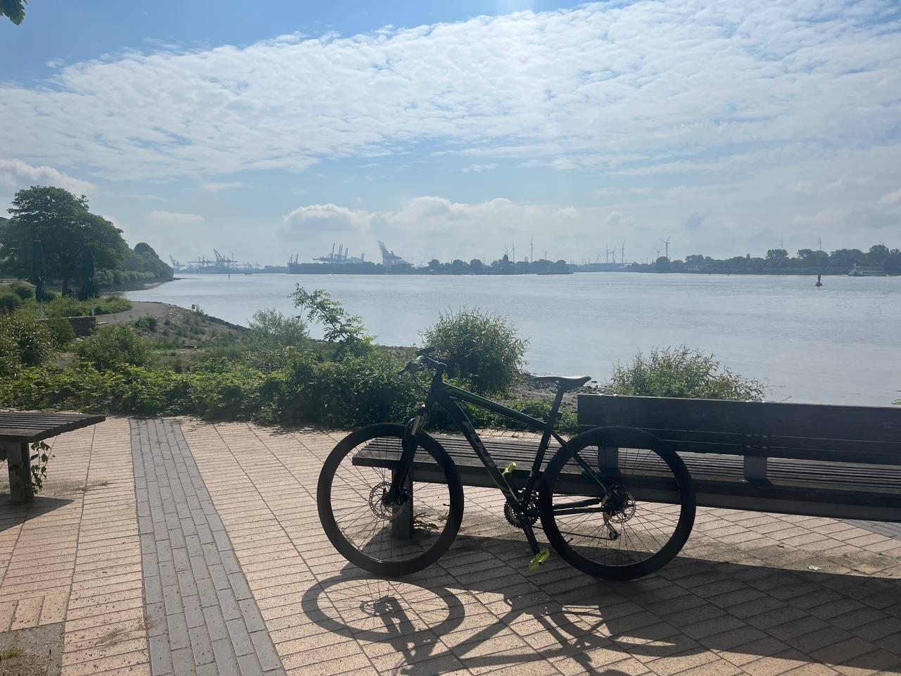
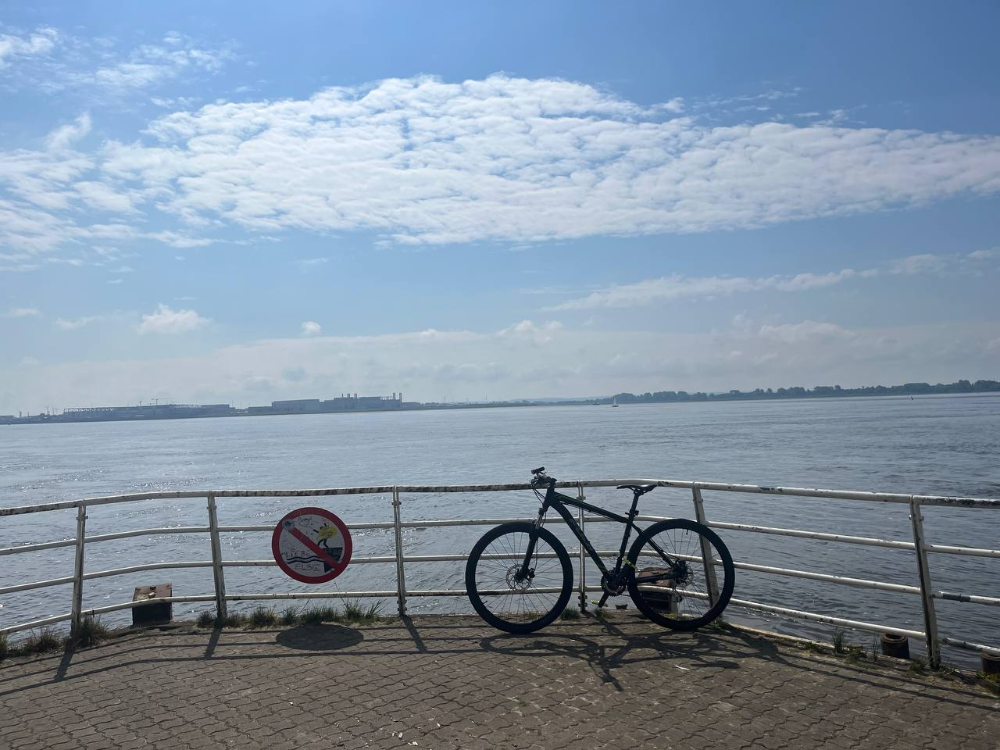

Welcome to CyclingHub
At CyclingHub, we are passionate about helping cyclists of all levels achieve their goals. Whether you're a casual rider or a competitive cyclist, our app provides the tools and insights to track your rides, improve your performance, and stay motivated.
Our Vision
CyclingHub was born from a desire to make cycling data accessible and actionable for everyone. Our vision is to create a community where every cyclist can connect, share their progress, and grow together.
We believe in the power of technology to enhance your cycling experience, bringing advanced tracking and analytics to your fingertips in an easy-to-use platform.
Key Features
CyclingHub offers a range of features tailored to your cycling needs:
- Real-time ride tracking with GPS
- Comprehensive performance analytics
- Goal-setting and achievement badges
- Community challenges and leaderboards
Our goal is to empower cyclists with actionable insights that make every ride more enjoyable and purposeful.
Meet the Team
Behind CyclingHub is a dedicated team of developers, designers, and cycling enthusiasts. Our team combines expertise in software development with a deep love for the sport to create an app that truly meets the needs of the cycling community.
We are constantly listening to our users and evolving CyclingHub to bring you the best possible experience.
Future Goals
The journey doesn’t stop here. We are excited about expanding CyclingHub with features like AI-powered training recommendations, smart device integrations, and a global cyclist network.
Together, let's push the boundaries of what’s possible and take your cycling experience to the next level.